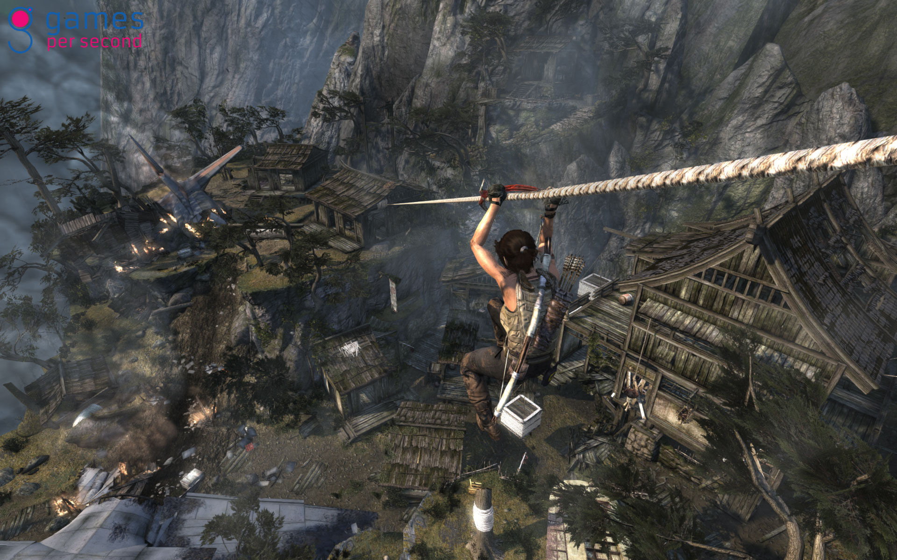

Tomb Raider is an action-adventure video game. Published by Square Enix, Tomb Raider is the fifth title developed by Crystal Dynamics in the Tomb Raider franchise. As the first entry in a new Tomb Raider continuity, the game is a reboot that emphasises the reconstructed origins of the culturally influential lead character Lara Croft. Tomb Raider was released on 5 March 2013 for Microsoft Windows, PlayStation 3 and Xbox 360.
Tomb Raider is set on Yamatai, an island from which Lara Croft must save her friends and escape, while being hunted down by a malevolent cult. Gameplay elements focus more on survival, although exploration is used within the game when exploring the island and various optional tombs.

Tomb Raider is the latest game in franchise. You play, as you always have, as Lara Croft. This game takes place when Lara is young - before she becomes a tomb raider. You are trapped in a cursed island called Yamatai. Throughout the game, you use stealth to kill enemies and you also must solve puzzles. You collect salvage by finding boxes or killing animals. This salvage allows you to upgrade you weapons. The graphics and scenery of the game are impressive. The game is fun and action-packed. It is refreshing to see a female protagonist in a game.